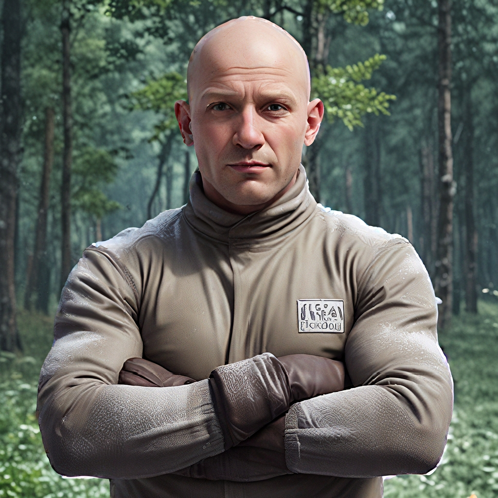

Przewodnik po korzystaniu z funkcji Zastąp Tło
Funkcja Zastąp Tło w AiCasso jest idealna, gdy chcesz wymienić tło w swoim obrazie. Niezależnie od tego, czy chcesz po prostu usunąć tło, czy zastąpić je czymś innym, AiCasso sprawia, że jest to niezwykle proste. Nie musisz się martwić o techniczne szczegóły — po prostu opisz, co chcesz, a AiCasso zrobi resztę.
Jak to działa:
Obraz wejściowy:
Zapytanie 1:
"Usuń tło"
Wynik 1:
Zapytanie 2:
"Zastąp tło lasem, a nie tylko je usuń, z wyłączonym matowaniem alfa. Użyj progu pierwszego planu 240, progu tła 20 i rozmiaru erozji 5 dla matowania alfa."
Wynik 2:

Opcjonalne parametry
Jeśli chcesz dodać osobisty akcent lub dostosować wyniki, oto kilka opcji, z którymi możesz eksperymentować:
- Tylko usuń: Jeśli chcesz tylko usunąć tło i nie zastępować go niczym, to jest twoja opcja. To jak naciśnięcie przycisku czystej kartki.
- Matowanie alfa: To elegancki sposób na powiedzenie "wtopić krawędzie". Gdy to włączysz, pomoże to sprawić, że krawędzie twojego obiektu będą wyglądać na gładsze i mniej wycięte. Domyślnie jest wyłączone.
- Próg pierwszego planu matowania alfa: To kontroluje, ile z głównego obiektu (takiego jak osoba) pozostaje widoczne podczas używania matowania alfa. Domyślnie wynosi 240, a ty możesz go dostosować, aby krawędzie były bardziej miękkie lub ostrzejsze.
- Próg tła matowania alfa: To działa tak samo jak próg pierwszego planu, ale dla tła. Domyślnie wynosi 20 i chodzi o uzyskanie idealnego połączenia z nowym tłem.
- Rozmiar erozji matowania alfa: To pomaga nieco zmniejszyć krawędzie, aby wycięcie wyglądało na czystsze. Domyślny rozmiar to 5, ale możesz go dostosować, aby uzyskać dokładny wygląd, którego chcesz.
Pamiętaj, że nie musisz się stresować, aby wszystko było idealne. AiCasso jest całkiem dobry w rozumieniu, co masz na myśli, więc śmiało bądź tak swobodny lub szczegółowy, jak chcesz. Miłego tworzenia!